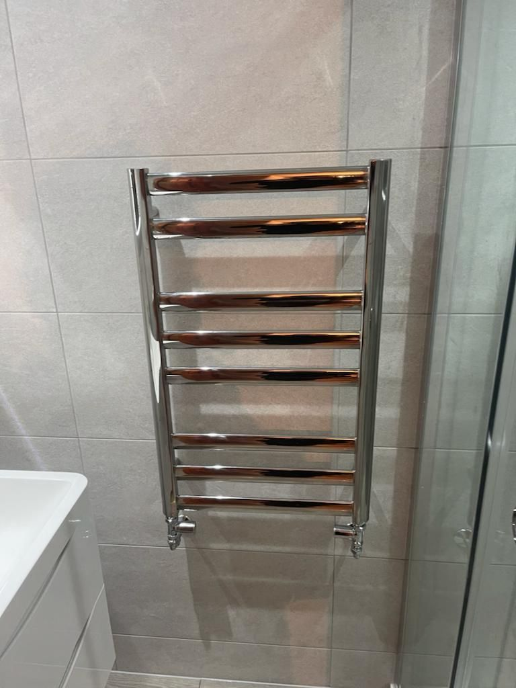

Plumbing and heating repairs in Castleford. No job too small.
Alongside full bathroom installs, we take on everyday plumbing and heating work across Castleford, Pontefract and Leeds: dripping taps, leaking pipes, toilets, showers, radiators and heating faults.
Home visit and written price before anything is booked. Fully insured.

The same care on a tap as on a full bathroom.
Small jobs get the same attention as our bathroom projects. We turn up when we say we will, explain what’s wrong and leave the house clean and tidy.
If water is escaping right now, don’t wait for a reply to a form. Call the mobile on 07872 584 324, day or night.
What’s included
- Replacement taps and mixers
- Leaking pipes and joints
- Toilet and cistern repairs and replacements
- Shower repairs and replacements
- Radiators, towel rails and underfloor heating
- Boiler, radiator and heating repairs
What customers say.
Thanks to Craig and John for all their hard work on our new bathroom. I can't recommend them highly enough. From start to finish they have been extremely professional and the finished bathroom is excellent. Will definitely be using them for our next project.
We were extremely impressed by the finish. We would highly recommend!
A true professional, with attention to detail from start to finish.
Common questions.
If your question isn’t here, call 01977 309 517 or send it with your enquiry.
Do you take on small plumbing jobs?
Yes. Replacement taps, leaking pipes, toilets, showers and radiators are all welcome. No job is too small.
Do you repair radiators and heating?
Yes. We carry out boiler and radiator work, replace towel rails, fit underfloor heating and repair heating systems.
Do you offer 24-hour emergency call-outs?
Yes. For burst pipes, serious leaks or no water, call Craig's mobile on 07872 584 324, day or night.
Which areas do you cover?
We're based at 75 Lower Oxford Street in Castleford and cover Pontefract, Methley, Rothwell, Garforth, Kippax, Whitkirk, Roundhay, Leeds and the wider West Yorkshire area. We have also travelled to Harrogate for bathroom projects.
Are you insured?
Yes. C Jackson Plumbing is fully insured on every job.
How long have you been in business?
C Jackson Plumbing is a family-owned firm with over 15 years of experience fitting bathrooms, kitchens and heating.
Need a plumber in Castleford?
Call the office, or send a few details and we’ll get back to you.